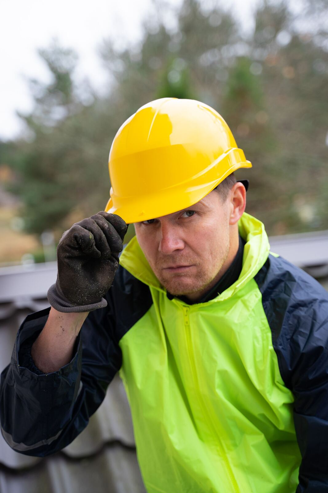

Start / Om oss
Om oss
Kungsbacka Mark & Trädgård AB är ett mark-, bygg- och trädgårdsföretag med säte i Veddige. Vi arbetar i hela Varberg, Kungsbacka och Göteborg med omnejd och åtar oss alla typer av gräv-, mark-, trädgårds- och byggtjänster.
Kompetens i egen regi
Personalen är utbildade till snickare, grävmaskinist, lastbilschaufför och hjullastarförare. Det gör att vi kan ta ansvar för hela kedjan – från schakt och dränering till finplanering, materialleverans och bygg – utan att samordna flera underentreprenörer.
- SnickareAltaner, garage, tillbyggnader och renoveringar.
- GrävmaskinistSchakt, dränering och grundläggning.
- LastbilschaufförMaterialleverans och bortforsling.
- HjullastarförarePlanering, återfyllning och materialhantering.
Bolagsfakta
- Företagsnamn
- Kungsbacka Mark & Trädgård AB
- Organisationsnummer
- 559006-9687
- Säte
- Veddigevägen 253, 432 66 Veddige
- F-skatt
- Godkänd för F-skatt
- Verksamhetsområden
- Markarbeten, dränering, stensättning & murar, bygg & altaner, trädgårdsanläggning
- Geografiskt område
- Varberg, Kungsbacka och Göteborg med omnejd

Vill du arbeta hos oss?
Vi är alltid intresserade av att komma i kontakt med yrkeskunniga anläggare, maskinförare och snickare. Skicka gärna en spontanansökan med några rader om dig själv.
Skicka spontanansökanVälkommen att kontakta oss
Hur kan vi hjälpa dig med ditt projekt?
Kontakta osseller ring direkt: 0735-23 53 16